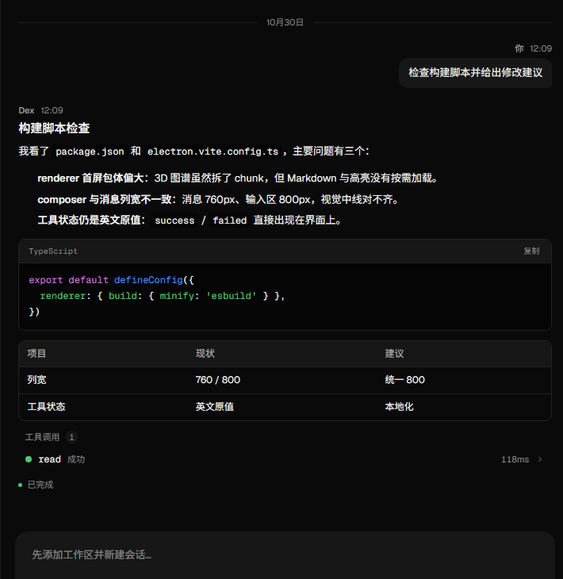
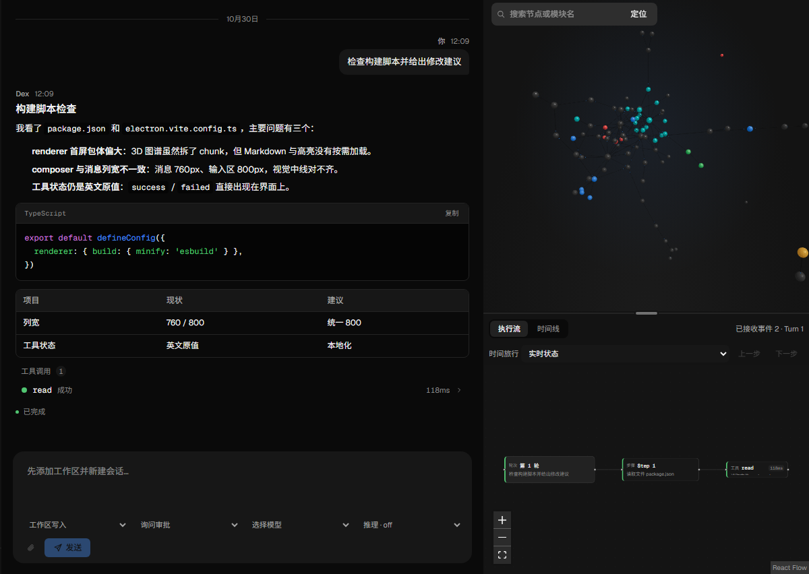
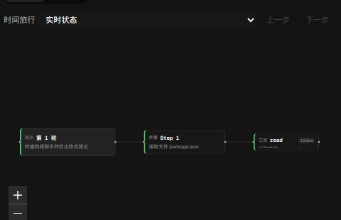
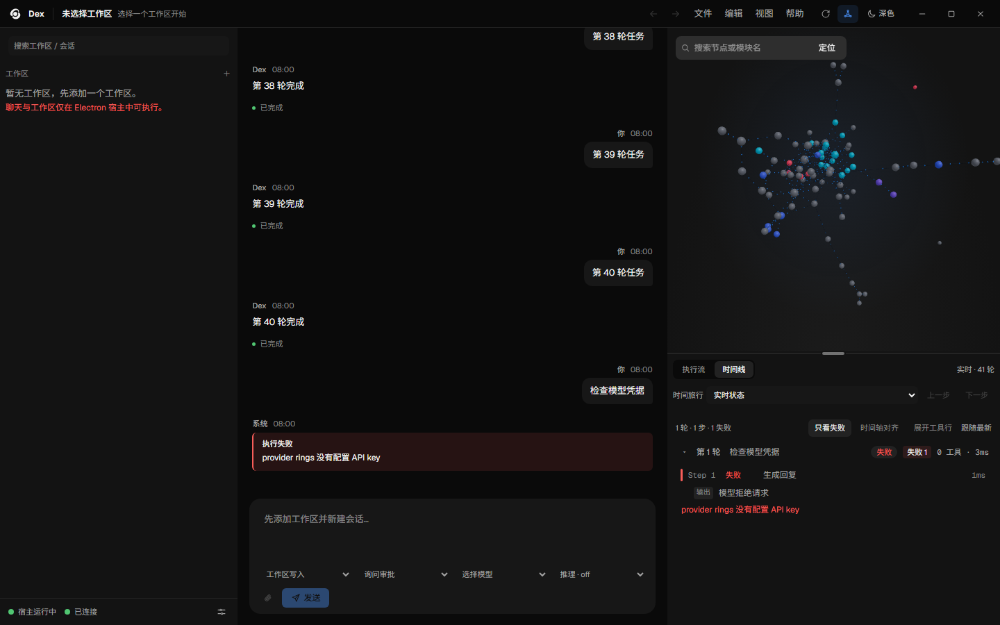
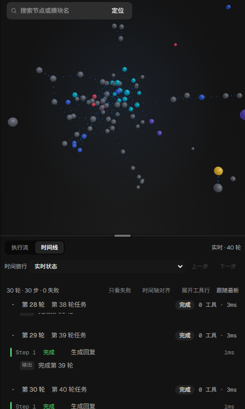

00:00 / PROMPT
TURN 01 · 输入
你只说了一句话。
“检查构建脚本并给出修改建议。” 工作区、模型、推理强度都已经就位。剩下的，交给 Agent。
你不需要先学会它的内部结构，才能使用它。但你应该能在需要时看见它。

从一句话开始，跟着 Step、Tool Call 与失败路径，走完一次真实的编码任务。不是结果截图，是一条可以回退的执行线。

示例执行 / 真实界面截图 / 非实时数据
“检查构建脚本并给出修改建议。” 工作区、模型、推理强度都已经就位。剩下的，交给 Agent。
你不需要先学会它的内部结构，才能使用它。但你应该能在需要时看见它。

Step 不是一行日志，是一个节点。它带着推理摘要、工具调用和耗时；点击节点，Tool Call 会展开。
Turn → Step → Tool Call。层级不是装饰，是定位问题的坐标系。

read、grep、edit、test。每个 Tool Call 都有入参、返回和耗时；失败的那一个会被标红，并向上传播。
工具调用不是黑盒里的魔法。它是你可以在详情面板里读到的证据。
失败节点变红，并沿依赖向上传播。点一下，详情面板给出错误原因、堆栈与当时的推理文本。这张图是另一个失败示例：模型凭据缺失。
失败不是一行红字，而是一条可以重新进入的路径。

时间线不是录像。它重建状态：回到任意 Step，查看当时的上下文，再走一遍。失败不是终点。
回放不是看像素，是看状态。你回到的是那一步，而不是那一段视频。

WHY A RUN
录屏只能证明“发生过”。Dex AGENT 要证明的是“为什么发生、从哪里失败、怎么回去”。
回放的是事件与上下文，不是像素。回到那一步，看到当时的输入、工具返回与推理。
每个 Step 都能回到 3D 图谱里的插件节点；选中工具，执行流过滤出调用它的步骤。
失败不是终点。回退、查看、再走一遍，是调试 Agent 的基本动作。